April 25-26, 2015
| My sweet sister Desirae and my amazing mother
Marcella brought their posse to OKC for another half marathon
experience. Mom has been running the half for ages. My
sister Desirae and I have been walking the half for the past two years -
but this time we ran every 1/2 mile. It was rough, but we had a good
time. |
|
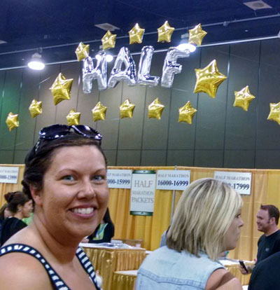 |
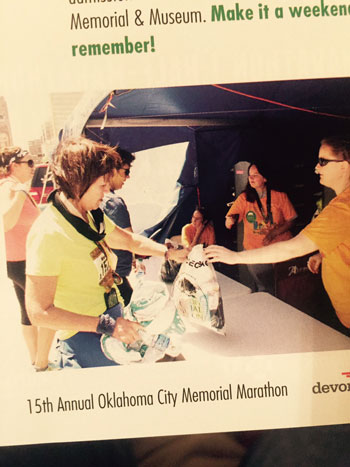 |
| My lovely sister at the packet pickup booth | Hey - we're famous! This picture of the 3 of us was in the program. |
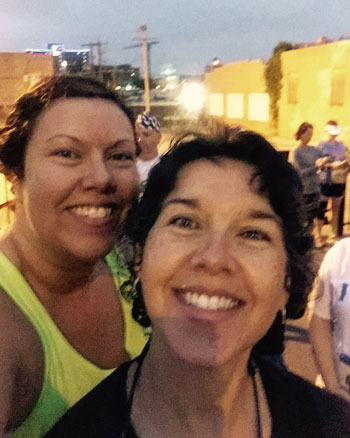 |
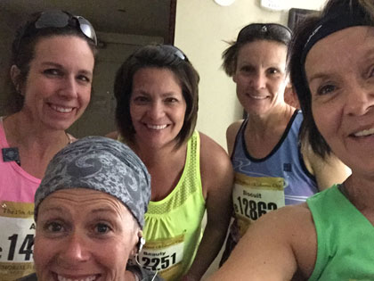 |
| EARLY on Sunday morning, trying to be optimistic | Mom's gang of runners, ready for action |
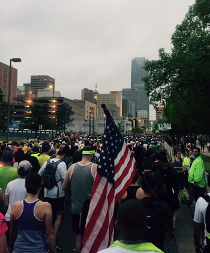 |
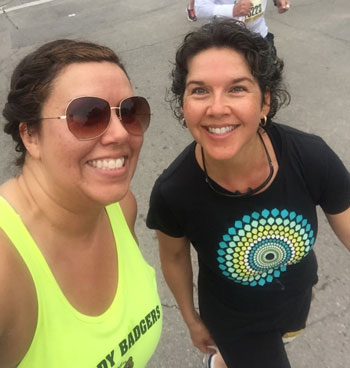 |
| We only had about 20,000 people in front of us to reach the start! | At about mile 3, feeling pretty good |
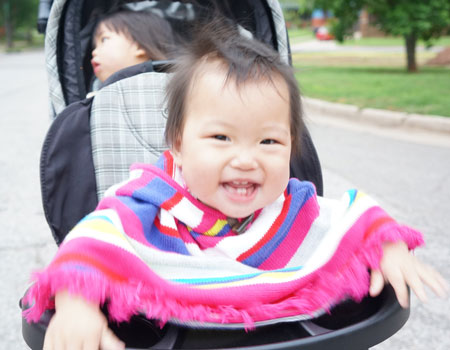 |
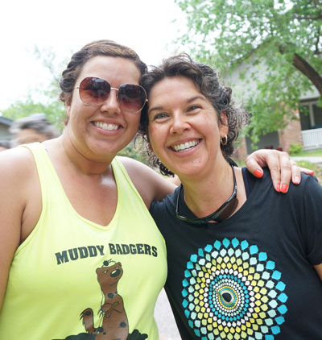 |
| What a treat! Beautiful cheerleaders at mile 5 - Jiayi, Isabel, and Melody | Thanks Jiayi for the picture, and for cheering us on! |
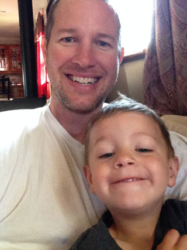 |
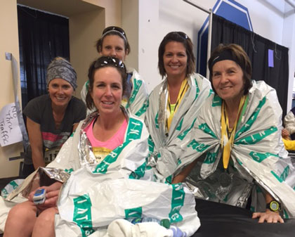 |
| At about mile 8, we received this picture of Desirae's support team | One of Mom's friends got dehydrated and received great care, she's fine now! |
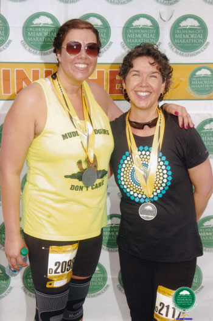 |
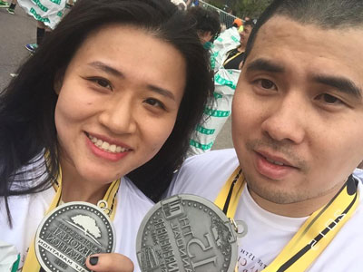 My friends Hu and Shine did the half too. It was a good day! |
| So glad to be done! | |